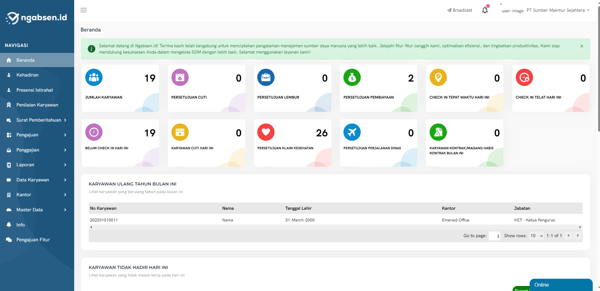
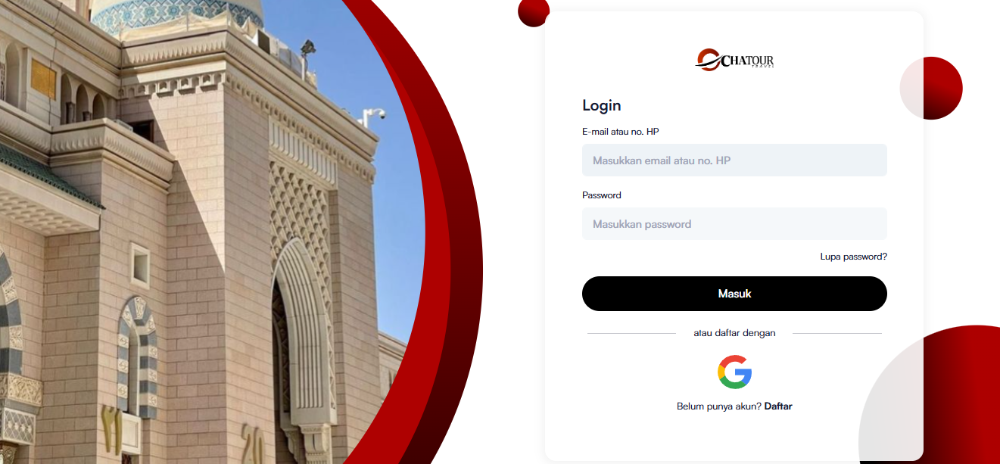
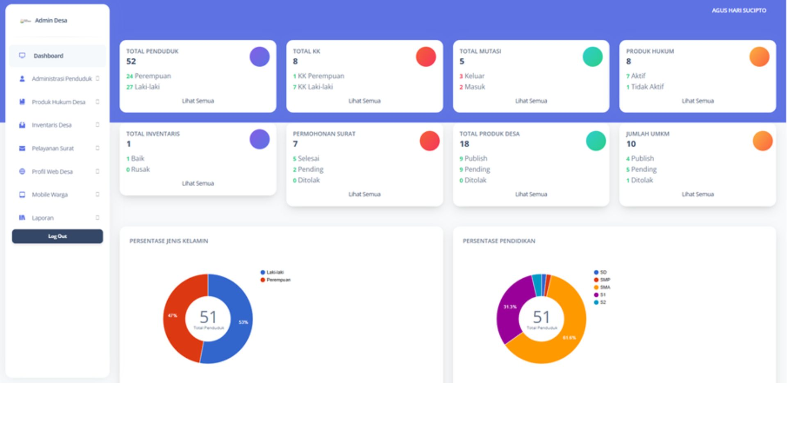

Ngabsen.id
Human Resource Information System (HRIS) untuk mengelola data dan proses kepegawaian di sisi perusahaan.
- Peran
- Developer
- Stack
- Laravel, MySql, Bootstrap, Javascript, jQWidgets, Payment gateway
Software Engineer · Web Developer
Saya Agung Wahyu. Lebih dari empat tahun saya membangun aplikasi web dengan Laravel dan MySQL, dari perancangan skema database dan optimasi query sampai RESTful API untuk aplikasi mobile dan payment gateway. Saya terbiasa menggali kebutuhan dan menjelaskan solusi teknis kepada pengguna non-teknis.
Beberapa projek yang pernah saya kembangkan.

Human Resource Information System (HRIS) untuk mengelola data dan proses kepegawaian di sisi perusahaan.

Aplikasi web untuk pemesanan paket perjalanan haji dan umrah.

Aplikasi Web dan Mobile untuk pengelolaan penduduk desa, inventaris, dan surat-menyurat desa. Saya berperan mengerjakan perancangan ERD, frontend, backend, hingga API untuk mobile.
Aplikasi untuk kebutuhan internal instansi pemerintah. Karena sifatnya internal, nama instansi dan detail sistem tidak ditampilkan.
Saya lulusan D-IV Teknik Informatika dengan IPK 3,85. Pekerjaan saya berpusat pada aplikasi web berbasis database: merancang skema, menulis query yang cepat, dan membuka data lewat RESTful API untuk aplikasi mobile serta integrasi payment gateway.
Pernah menjadi Tenaga Ahli Programmer untuk aplikasi di lingkup internal pemerintahan. Saya juga pernah mengajar pemrograman web, jadi menjelaskan hal teknis kepada orang yang tidak berlatar teknis sudah menjadi kebiasaan kerja.
Dikelompokkan menurut fungsi.
Laravel, PHP, CodeIgniter 3, Go (Golang), RESTful API
Aplikasi web, dari sistem kepegawaian sampai pemesanan.HTML, CSS, JavaScript, jQuery, Bootstrap, Vue.js
Aplikasi web, dari sistem kepegawaian sampai pemesanan.MySQL, desain skema, penulisan query SQL, tuning performa
Perancangan skema database dan optimasi query.RESTful API, payment gateway
API untuk aplikasi mobile dan integrasi pembayaran.Analisis kebutuhan, komunikasi dengan pengguna non-teknis, pengajaran pemrograman web
Lingkup internal pemerintahan
Mengembangkan aplikasi internal instansi pemerintah.
Memberikan pelatihan privat dan kelas reguler dalam pemrograman web dasar hingga lanjutan menggunakan PHP dan MySQL. Membimbing siswa dalam membangun aplikasi web dan memahami konsep dasar pemrograman.
Travel Haji Umroh
Mengembangkan pemesanan pada travel haji umroh.
Ragasport
Mengembangkan pemesanan venue sport center.
Ngabsen.id
Mengembangkan sistem HRIS Ngabsen.id.
- Merancang struktur database sistem informasi desa (data penduduk, surat, inventaris).
- Membangun backend dan RESTful API menggunakan Laravel & CodeIgniter 3.
- Bekerja sama dengan tim dalam proses pengembangan dan deployment sistem, hingga akhirnya aplikasi berhasil digunakan oleh lebih dari 3 desa di wilayah Jawa Timur untuk mendukung digitalisasi layanan publik.
- Menangani berbagai proyek website seperti edutaraka.com, tomokoyuki.com, dan mesinkopijember.com , sesuai kebutuhan klien lintas industri..
- Bertanggung jawab penuh atas desain database, pengembangan frontend dan backend, serta penerapan prinsip UI/UX untuk meningkatkan kenyamanan dan fungsionalitas pengguna.
- Menggunakan teknologi CodeIgniter 3, Laravel, MySQL, dan Bootstrap dalam mengembangkan solusi web yang ringan, efisien, dan responsif.
- Seluruh proyek berhasil online tepat waktu dengan hasil akhir yang sesuai permintaan klien, serta mendapat feedback positif dari pengguna akhir.
Have a project in mind or a role that might be a fit? Let’s talk.